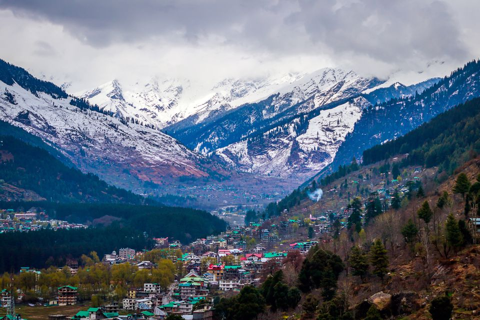

Popular Nature Destinations In India
From hauntingly beautiful snowy escapades to lush forests and hills of rolling green, from the endless golden beaches to the sapphire and emerald lakes embedded in the landscape, the natural beauty of the Indian subcontinent is unparalleled. The unspoilt and unexplored terrains of the country leave one in awe of their breathtaking splendour. Moreover, the differences and contrasts of one region from another accentuate the appeal of these landscapes - be it the frigid cold deserts of Leh that call to the soul-searcher in you or the sun-drenched mystique desert dunes of Rajasthan that take you back to the times of royals. Starting from the snow-capped Himalayas in the north, traversing the deserts of Rajasthan, crossing the lush forests of Madhya Pradesh and then sailing in the expansive backwaters of Kerala, and finally diving into the pristine waters of the Andaman and Nicobar Islands, the journey is full of adventurous highs and serene lows.
MANALI
OOTY